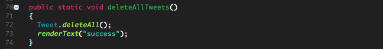

Introduction
This is a follow-on lab to MyTweet-Assignment-01. The lab provides guidance but not comprehensive instructions (which is reasonable given that it relates to an assignment). The guidance addesses issues that might otherwise prove quite difficult to resolve.
Preview
The aim of the previous lab was to facilitate the creation of a walking skeleton of the baseline Android MyTweet app, the subject of the second and final Mobile Application Development assignment.
In this lab we further develop MyTweet Android client and Play service by introducing a User model and establishing a many-to-one bi-directional relationship between User and Tweet models.
- Introduce a User model
- Modify the existing Tweet model
- Modify the Welcome activity by the addition of buttons to allow a user to access sign up and log in views.
It is necessary to have completed the projects in the previous lab and to use these as a starting point in this lab:
- mytweet-app
- mytweet-service
- mytweet-service-test
There are differences in the sample archive code provided here compared to the previous assignment studio lab (MyTweet-01).
One important difference relates to file JsonParsers.java in the service app (MyTweetService):
- In this lab we use flexjson library in mytweet-service: it is essential that you do also here.
- This library is necessary because of the OneToMany relationship that is now used in the User-Tweet model pair.
- However, it is simpler to use gson in both the Android client (mytweet-app) and the JUnit test code.
- The sample code downloadable below follows these recommendations.
- This has been verified on a corresponding Android client used in the preparation of this lab (not available to download).
As a consequence, in mytweet-service, you should modify the file dependencies.yml in the conf folder to read as follows:
# Application dependencies
require:
- play
- net.sf.flexjson -> flexjson 3.2
Here are working sample apps that you may find helpful:
Recall again how to eliminate build path errors in an imported Play app archive (these errors are usually indicated by the presence of a red exclamation mark to the left of the project name in the Eclipse workspace):
- Import the archive into Eclipse
- Delete the eclipse folder
- In a terminal cd to the root of the Play app and run successively:
play eclipsify
play deps
Finally, refresh the project in the Eclipse workspace (highlight project name and press F5 or right click to reveal context menu and select Refresh ).
MyTweetService (User)
We shall develop a User model class in this step.
We establish a relationship with the Tweet model as follows:
@OneToMany(mappedBy="user",cascade = CascadeType.ALL)
public List<Tweet> tweets = new ArrayList<Tweet>();
What this is expressing is that:
- a single user may own many tweets
- User stores the tweets in a list named tweets
- any particular tweet will have a reference to its owning user
- this will be represented as User user field in Tweet class which we shall see shortly.
Here is the new User model code including the above snippet. We are familiar with most aspects of this User class from previous labs such as, for example, Donation.
Note that we are generating the id (uuid) in the client as we did with the Tweet model.
File: User.java
package models;
import java.util.ArrayList;
import java.util.List;
import javax.persistence.CascadeType;
import javax.persistence.Column;
import javax.persistence.Entity;
import javax.persistence.Id;
import javax.persistence.OneToMany;
import javax.persistence.Table;
import play.db.jpa.GenericModel;
/**
* User has been escaped: This is necessary because User is a reserved word in PostGreSQL
* However, if working in local host and wish to use localhost:9000/@db (for example) to view database
* Then it is necessary to temporarily comment out the line (i.e. @Table(name = "`User`") while testing with local host
*
*/
@Entity
@Table(name="`User`") //To facilitate deployment to heroku: comment out if required to inspect localhost:9000/@db
public class User extends GenericModel
{
@Id
@Column(name="id")
public String uuid;
public String firstName;
public String lastName;
public String email;
public String password;
@OneToMany(mappedBy="user",cascade = CascadeType.ALL)
public List<Tweet> tweets = new ArrayList<Tweet>();
public User(String uuid, String firstName, String lastName, String email, String password)
{
this.uuid = uuid;
this.firstName= firstName;
this.lastName = lastName;
this.email = email;
this.password = password;
}
public static User findByEmail(String email)
{
return find("email", email).first();
}
public boolean checkPassword(String password)
{
return this.password.equals(password);
}
}
MyTweetService (Tweet)
The only change to the Tweet model is the addition of the other side of the relationship introduced in User:
@ManyToOne
public User user;
A user may own (create) many tweets but a tweet will always have been created by a single user.
Here is the complete class:
package models;
import javax.persistence.Column;
import javax.persistence.Entity;
import javax.persistence.Id;
import javax.persistence.ManyToOne;
import play.db.jpa.GenericModel;
@Entity
public class Tweet extends GenericModel
{
@Id
@Column(name="id")
public String uuid;
public String message;
public String datestamp;
@ManyToOne
public User user;
public Tweet(String uuid, String message, String datestamp)
{
this.uuid = uuid;
this.message = message;
this.datestamp = datestamp;
}
}
Replace the routes file with an updated version that accommodates the new User model:
# Routes
# This file defines all application routes (Higher priority routes first)
# ~~~~
GET / Application.index
GET /api/users UsersAPI.users
GET /api/users/{id} UsersAPI.user
POST /api/users UsersAPI.createUser
DELETE /api/users/{id} UsersAPI.deleteUser
DELETE /api/users UsersAPI.deleteAllUsers
GET /api/users/{userId}/tweets TweetsAPI.tweets
GET /api/users/{userId}/tweet/{id} TweetsAPI.tweet
POST /api/users/{userId}/tweets TweetsAPI.createTweet
DELETE /api/users/{userId}/tweets/{id} TweetsAPI.deleteTweet
DELETE /api/users/{userId}/tweets TweetsAPI.deleteAllTweets
# Ignore favicon requests
GET /favicon.ico 404
# Map static resources from the /app/public folder to the /public path
GET /public/ staticDir:public
# Catch all
* /{controller}/{action} {controller}.{action}
MyTweetService(APIs)
JsonParsers
Here is the JsonParsers file updated with User conversion code:
package utils;
import java.lang.reflect.Type;
import java.util.ArrayList;
import java.util.List;
import com.google.gson.Gson;
import com.google.gson.reflect.TypeToken;
import flexjson.JSONDeserializer;
import flexjson.JSONSerializer;
import models.Tweet;
import models.User;
public class JsonParsers
{
public static JSONSerializer userSerializer = new JSONSerializer().exclude("class")
.exclude("persistent")
.exclude("entityId")
.exclude("tweets");
public static JSONSerializer TweetSerializer = new JSONSerializer().exclude("class")
.exclude("persistent")
.exclude("entityId");
public static User json2User(String json)
{
return new JSONDeserializer<User>().deserialize(json, User.class);
}
public static List<User> json2Users(String json)
{
return new JSONDeserializer<ArrayList<User>>().use("values", User.class).deserialize(json);
}
public static String user2Json(Object obj)
{
return userSerializer.serialize(obj);
}
public static List<User> users2Json(String json)
{
return new JSONDeserializer<ArrayList<User>>().use("values", User.class).deserialize(json);
}
public static Tweet json2Tweet(String json)
{
return new JSONDeserializer<Tweet>().deserialize(json, Tweet.class);
}
public static String tweet2Json(Object obj)
{
return TweetSerializer.serialize(obj);
}
public static List<Tweet> json2Tweets(String json)
{
return new JSONDeserializer<ArrayList<Tweet>>().use("values", Tweet.class).deserialize(json);
}
}
UsersAPI
Add an API for User class:
File: UsersAPI.java
package controllers;
import play.*;
import play.mvc.*;
import utils.JsonParsers;
import java.util.*;
import com.google.gson.JsonElement;
import models.*;
public class UsersAPI extends Controller
{
public static void users()
{
List<User> users = User.findAll();
renderJSON(JsonParsers.user2Json(users));
}
public static void user(String id)
{
User user = User.findById(id);
if (user == null)
{
notFound();
}
else
{
renderJSON(JsonParsers.user2Json(user));
}
}
public static void createUser(JsonElement body)
{
User user = JsonParsers.json2User(body.toString());
user.save();
renderJSON(JsonParsers.user2Json(user));
}
public static void deleteUser(String id)
{
User user = User.findById(id);
if (user == null)
{
notFound();
}
else
{
List<Tweet> tweets = user.tweets;
for(int j = 0; j < tweets.size(); j += 1)
{
Tweet tweet = Tweet.findById(tweets.get(j).uuid);
user.tweets.remove(tweet);
user.save();
tweet.delete();
}
user.delete();
renderText("success");
}
}
public static void deleteAllUsers()
{
List<User> users = User.findAll();
for(int i = 0; i < users.size(); i += 1)
{
User user = users.get(i);
List<Tweet> tweets = user.tweets;
for(int j = 0; j < tweets.size(); j += 1)
{
Tweet tweet = Tweet.findById(tweets.get(j).uuid);
user.tweets.remove(tweet);
user.save();
tweet.delete();
}
user.delete();
}
renderText("success");
}
}
For reference, here is the TweetsAPI:
package controllers;
import java.util.List;
import java.util.Random;
import models.Tweet;
import models.User;
import play.Logger;
import play.mvc.Controller;
import utils.JsonParsers;
import com.google.gson.JsonElement;
public class TweetsAPI extends Controller
{
/**
* retrieve all tweets
*/
public static void tweets(String userId)
{
User user = User.findById(userId);
if(user == null)
{
notFound();
}
else
{
List<Tweet> tweets = user.tweets;
renderJSON(JsonParsers.tweet2Json(tweets));
}
}
public static void tweet(String id)
{
Tweet tweet = Tweet.findById(id);
if (tweet == null)
{
notFound();
}
else
{
renderJSON(JsonParsers.tweet2Json(tweet));
}
}
public static void createTweet(String userId, JsonElement body)
{
Tweet tweet = JsonParsers.json2Tweet(body.toString());
User user = User.findById(userId);
user.tweets.add(tweet);
tweet.user = user;
tweet.save();
renderJSON(JsonParsers.tweet2Json(tweet));
}
public static void deleteTweet(String id)
{
Tweet tweet = Tweet.findById(id);
if (tweet == null)
{
notFound();
}
else
{
tweet.delete();
renderText("success");
}
}
public static void deleteAllTweets()
{
Tweet.deleteAll();
renderText("success");
}
}
Deletion
You are recommended to study and understand how Tweets and Users are deleted in the API files.
- Deleting tweets is straightforward as shown here in figure 1.

- But deleting users is much more complex. This is apparent in Figure 2.
- This complexity is caused by the many-to-one relationship between tweets and users:
- A User contains a list of tweets and so when a user is deleted it is necessary to ensure its associated tweets are also removed.
- This complexity is caused by the many-to-one relationship between tweets and users:

Recall that we already encountered code like this in the WitPress lab.
-
Figure 3 adds to Figure 2 by providing explanatory comments.
Figure 4 shows the methods to create a tweet and a user side-by-side with the deleteAllUsers method:
Routes & APIs
Now that you have added both routes and APIs, it is worthwhile taking a moment to study how the uri-api relationship works.
Consider this extract from the routes file:
A typical application of the url portion of this could be:
Now examine the method TweetsAPI.tweets below.
Observe the argument String userId). The value passed in this argument is the user's uuid as shown in Figure 2.
Now study the more complex POST request shown here in Figure 4.
-
Item number 1 illustrates how the argument list in Rest.post() comprises a url and a JSON representaton of the tweet that we wish to create on the server.
-
Item number 2 is an extract from the routes file and shows that this request expects a method TweetAPI.createTweet to be available to invoke server-side.
-
Item number 3 shows the method TweetAPI.createTweet. Observer that there are two arguments, the first value obtained from the uri (the User uuid) and the second the JSON Tweet object.
MyTweetApp (Welcome)
We have completed refactoring mytweet-service Play app and now address the Android mytweetapp client.
The legacy Welcome screen and its suggested replacement are shown here in Figure 1:

The refactored Welcome screen and new Login and Signup screens are depicted in Figure 2.
MyTweetApp(Model)
The model classes used in the Android client, MyTweetApp are introduced in this step.
Tweet
The Tweet model class remains unchanged. No relationship between Tweet and User will exist in the client.
- Such a relationship does, however, exist on the Play service app.
User
Here is the new User model class. Observe that the uuid is generated here rather than in the Play app on the server.
- The server obtains the uuid by parsing the url:
- For example : GET /api/users/{userId}/tweets TweetsAPI.tweets
- This behaviour mirrors that adopted by us in Tweet model class.
- In Donations labs, however, the conventional approach of allowing the service Play app to generate the uuid (the primary key) is adopted.
package org.wit.mytweet.model;
import java.util.UUID;
public class User
{
public String uuid;
public String firstName;
public String lastName;
public String email;
public String password;
public User()
{}
public User(String firstName, String lastName, String email, String password)
{
this.uuid = UUID.randomUUID().toString();
this.firstName = firstName;
this.lastName = lastName;
this.email = email;
this.password = password;
}
}
MyTweetApp(API)
Here are sample APIs for both User and Tweet in the Android client (MyTweetApp):
File: TweetsAPI.java
package org.wit.mytweets.controllers;
import java.util.List;
import org.wit.mytweet.http.Request;
import org.wit.mytweet.http.Response;
import org.wit.mytweet.http.Rest;
import org.wit.mytweet.httputils.JsonParsers;
import org.wit.mytweet.model.Tweet;
import org.wit.mytweet.model.User;
import android.content.Context;
public class TweetsAPI
{
public static void getTweets(Context context, Response<Tweet> response, String dialogMesssage, User user)
{
new GetTweets(context, response, dialogMesssage).execute(user);
}
public static void createTweet(Context context, Response<Tweet> response, String dialogMesssage, User user, Tweet tweet)
{
new CreateTweet(context, response, dialogMesssage).execute(user,tweet);
}
public static void deleteTweet(Context context, Response<Tweet> response, String dialogMesssage, User user, Tweet tweet)
{
new DeleteTweet(context, response, dialogMesssage).execute(user, tweet);
}
}
class GetTweets extends Request
{
public GetTweets(Context context, Response<Tweet> callback, String message)
{
super(context, callback, message);
}
@Override
protected List<Tweet> doRequest(Object... params) throws Exception
{
String userId = ((User)params[0]).uuid;
String response = Rest.get("/api/users/" + userId + "/tweets");
List<Tweet> tweetList = JsonParsers.json2Tweets(response);
return tweetList;
}
}
class CreateTweet extends Request
{
public CreateTweet(Context context, Response<Tweet> callback, String message)
{
super(context, callback, message);
}
@Override
protected Tweet doRequest(Object... params) throws Exception
{
String userId = ((User)params[0]).uuid;
String response = Rest.post ("/api/users/" + userId + "/tweets", JsonParsers.tweet2Json(params[1]));
return JsonParsers.json2Tweet(response);
}
}
class DeleteTweet extends Request
{
public DeleteTweet(Context context, Response<Tweet> callback, String message)
{
super(context, callback, message);
}
@Override
protected Tweet doRequest(Object... params) throws Exception
{
User user = ((User)params[0]);
String tweetId = ((Tweet)params[1]).getId().toString();
String path = "/api/users/" + user.uuid + "/tweets/" + tweetId;
String response = Rest.delete (path);
if(response.equals("success"))
{
return new Tweet();//String not acceptable argument to any of Response methods so we fake it
}
else
{
throw new Exception();
}
}
}
File: UsersAPI.java
package org.wit.mytweets.controllers;
import java.util.List;
import org.wit.mytweet.http.Request;
import org.wit.mytweet.http.Response;
import org.wit.mytweet.http.Rest;
import org.wit.mytweet.httputils.JsonParsers;
import org.wit.mytweet.model.User;
import android.content.Context;
public class UsersAPI
{
public static void getUsers(Context context, Response<User> response, String dialogMesssage)
{
new GetUsers(context, response, dialogMesssage).execute();
}
public static void createUser(Context context, Response<User> response, String dialogMesssage, User user)
{
new CreateUser(context, response, dialogMesssage).execute(user);
}
public static void deleteUser(Context context, Response<User> response, String dialogMesssage, User user)
{
new DeleteUser(context, response, dialogMesssage).execute(user);
}
}
//===============================================================================================================//
class GetUsers extends Request
{
public GetUsers(Context context, Response<User> callback, String message)
{
super(context, callback, message);
}
@Override
protected List<User> doRequest(Object... params) throws Exception
{
String response = Rest.get("/api/users");
List<User> userList = JsonParsers.json2Users(response);
return userList;
}
}
class CreateUser extends Request
{
public CreateUser(Context context, Response<User> callback, String message)
{
super(context, callback, message);
}
@Override
protected User doRequest(Object... params) throws Exception
{
String response = Rest.post ("/api/users", JsonParsers.user2Json(params[0]));
return JsonParsers.json2User(response);
}
}
class DeleteUser extends Request
{
public DeleteUser(Context context, Response<User> callback, String message)
{
super(context, callback, message);
}
@Override
protected User doRequest(Object... params) throws Exception
{
String id = ((User)params[0]).uuid.toString();
String path = "/api/users/" + id;
String response = Rest.delete (path);
if(response.equals("success"))
{
return new User();
}
else
{
throw new Exception();
}
}
}
Add User parsers to JsonParsers.java which should eliminate the errors flagged when the above code is introduced:
public static User json2User(String json)
{
return gson.fromJson(json, User.class);
}
public static List<User> json2Users(String json)
{
Type collectionType = new TypeToken<List<User>>() {}.getType();
return gson.fromJson(json, collectionType);
}
public static String user2Json(Object obj)
{
return gson.toJson(obj);
}
Here, for reference, is the complete JsonParsers.java file:
package org.wit.mytweet.httputils;
import java.lang.reflect.Type;
import java.util.List;
import org.wit.mytweet.model.Tweet;
import org.wit.mytweet.model.User;
import com.google.gson.Gson;
import com.google.gson.reflect.TypeToken;
public class JsonParsers
{
static Gson gson = new Gson();
//===================User=====================//
public static User json2User(String json)
{
return gson.fromJson(json, User.class);
}
public static List<User> json2Users(String json)
{
Type collectionType = new TypeToken<List<User>>() {}.getType();
return gson.fromJson(json, collectionType);
}
public static String user2Json(Object obj)
{
return gson.toJson(obj);
}
//===============Tweet========================//
public static Tweet json2Tweet(String json)
{
return gson.fromJson(json, Tweet.class);
}
public static List<Tweet> json2Tweets(String json)
{
Type collectionType = new TypeToken<List<Tweet>>() {}.getType();
return gson.fromJson(json, collectionType);
}
public static String tweet2Json(Object obj)
{
return gson.toJson(obj);
}
}
MyTweetApp (Integration)
Some changes are required to accomodate the new User class and its relationship with Tweet.
Signup and Login
It is assumed you have already introduced and fully implemented these activities.
MyTweetApp
- It will be necessary to introduce a field here to store the current user.
- This field should be initialized from the Login activity (once a user has been authenticated).
public User logged_in_user;
Also required is a field for the current list of users:
public List <User> users = new ArrayList<User>();
And a method to authenticate:
public User validUser (String email, String password)
{
for (User user : users)
{
if (user.email.equals(email) && user.password.equals(password))
{
logged_in_user = user;
return user;
}
}
return null;
}
TimeLineFragment
Add User & MyTweetApp fields:
private User user;
private MyTweetApp app;
Initialize user in onCreate:
@Override
public void onCreate(Bundle savedInstanceState)
{
super.onCreate(savedInstanceState);
...
app = (MyTweetApp) getActivity().getApplication();
user = app.logged_in_user;
...
}
Modify the TweetsAPI.deleteTweet invocations to include a User instance:
TweetsAPI.deleteTweet(getActivity(), this, "deleting tweet", user, tweet);
MyTweetFragment
Replace the call in onClick to create a tweet with the following in which user has been introduced as an argument:
public void onClick(View v)
{
switch (v.getId())
{
case R.id.tweet_button:
User user = app.logged_in_user;
if(user != null)
{
TweetsAPI.createTweet(getActivity(), this, "tweeting", user, this_tweet);
}
else
{
Toast.makeText(getActivity(), "Unable to locate logged-in user", Toast.LENGTH_SHORT).show();
}
break;
}
}
Test
As part of the assignment you will be writing and executing comprehensive JUnit tests.
Here, in the meantime, are some quick checks you may perform using Postman:
Create a new user. Create some tweets associated with the user.
Repeat for a second user.
- GET the users
- GET a specific user using the user id from the previous test
- GET the tweets for a specific user
- DELETE all users
- Use the H2 console (localhost:9000/@db) to verify the associated tweets have also been deleted
- Replace the deleted users and DELETE the users individually
Here is a typical url to to retrieve the list of tweets for a specific user: Note that if you wish to use the H2 console to view the User table it will be necessary to comment out the following line in model User.java:
@Table(name="`User`")
Do not forget to restore this line when deploying to Heroku as a workaround since User is a reserved word in PostgreSql.
Here are screenshot of some tests results:

Consult the routes file as you conduct the tests to ensure the correct uri is being provided for each test.
Here is a further test you may wish to run:
package app.test;
import static org.junit.Assert.*;
import java.util.ArrayList;
import java.util.List;
import org.junit.After;
import org.junit.Before;
import org.junit.Test;
import app.model.Tweet;
import app.model.User;
import app.controllers.TweetsAPI;
import app.controllers.UsersAPI;
public class User_Tweet_Test
{
User barney = new User ("barney", "gumble", "barney@gumble.com", "secret");
static User userArray [] =
{
new User ("homer", "simpson", "homer@simpson.com", "secret"),
new User ("lisa", "simpson", "lisa@simpson.com", "secret"),
new User ("maggie", "simpson", "maggie@simpson.com", "secret"),
new User ("bart", "simpson", "bart@simpson.com", "secret"),
new User ("marge", "simpson", "marge@simpson.com", "secret"),
};
List <User> userList = new ArrayList<>();
/**
* Create list of users
*/
@Before
public void setup() throws Exception
{
for (User user : userArray)
{
User returned = UsersAPI.createUser(user);
userList.add(returned);
}
UsersAPI.createUser(barney);
}
@Test
public void testCreateTweets () throws Exception
{
Tweet tweet1 = new Tweet ("cash", "17-Nov-2014 12:45:53");
Tweet tweet2 = new Tweet ("cash", "17-Nov-2014 12:45:53");
Tweet tweet3 = new Tweet ("paypal", "17-Nov-2014 12:45:53");
Tweet returnedTweet1 = TweetsAPI.createTweet(barney, tweet1);
Tweet returnedTweet2 = TweetsAPI.createTweet(barney, tweet2);
Tweet returnedTweet3 = TweetsAPI.createTweet(barney, tweet3);
assertEquals(tweet1, returnedTweet1);
assertEquals(tweet2, returnedTweet2);
assertEquals(tweet3, returnedTweet3);
}
}
Use Chrome Postman to verify the results as shown below in Figures 6 & 7.
- Obviously any test you may run will have different UUIDs as these are randomly generated.